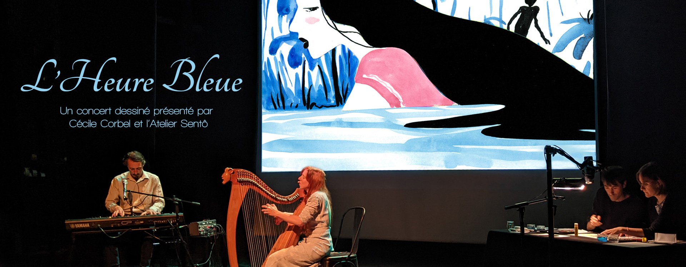

"C'est l'heure bleue... L'heure entre le jour et la nuit où le ciel se remplit entièrement d'un bleu plus bleu et plus pur que le bleu du jour."
"C'est l'heure bleue... L'heure entre le jour et la nuit où le ciel se remplit entièrement d'un bleu plus bleu et plus pur que le bleu du jour."

Deux musiciens et deux dessinateurs sur scène à l’unisson.
Les notes de harpe s’envolent et les histoires se racontent en musique et en images pour un voyage à la croisée des mondes. Entre rêve et réalité, vers des terres lointaines ou imaginaires, vous croiserez bientôt Morgane et Merlin, mais aussi d’autres fées et guerriers, des animaux et des fantômes, et partirez en imagination à la découverte de cités englouties sous la mer ou de jardins d’éternité, le long des landes bretonnes ou dans les paysages secrets de l’éternel Japon. Et sans doute à la fin du voyage vous ne serez plus tout à fait les mêmes…
Un spectacle à écouter et à regarder. Concert dessiné à vivre en famille - Pour public enfant et adulte

Cécile Corbel est une compositrice, auteure de chansons & musiques de films, harpiste celtique & chanteuse. Elle est connue pour son travail avec le Studio Ghibli pour lequel elle a créé en 2010 la musique du film “Arrietty, le Petit Monde des Chapardeurs” , récompensée par plusieurs disques d’or et prix, dont celui de la meilleure bande originale de l’année. Après 12 albums sous son nom, plus de 1000 concerts à travers le monde et de nombreuses collaborations (dont le Studio Chizu, le DJ japonais Daishi Dance, Misaki iwasa, Yumi Arai, ou encore Faada Freddy, Stanislas, Gabriel Yacoub, Guo Gan, les chanteuses Pomme et Natasha St Pier) cette artiste inclassable et très liée au monde de l’animation et de l’illustration se lance l’aventure d’un “Concert Dessiné” avec l’Atelier Sento.
www.cecile-corbel.com
Duo d’auteurs de Bande Dessinée composé de Cécile Brun et d’Olivier Pichard, l'Atelier Sentô est né de voyages au Japon, de rencontres et de dessins ramenés du pays du Soleil Levant. Leurs dessins à l'aquarelle plongent le lecteur dans des atmosphères oniriques. Leur roman graphique "Onibi, carnets du Japon invisible" a été récompensé par l'International Manga Award et publié aux Etats-Unis et au Japon. Ils sont les auteurs de "La Fête des Ombres" et de "Rêves de Japon", et scénaristes du "Songe du Corbeau". Pour ce concert dessiné, Cécile et Olivier créent des illustrations à 4 mains en variant les techniques : aquarelles, collages, pochoirs... pour offrir une expérience dynamique et immersive.
www.ateliersento.comTélécharger la fiche technique
Télécharger le PDF de présentation
Pour toute demande de tarifs et d'informations complémentaires merci de contacter conjointement : cecilecorbel.branmusic@gmail.com ET ateliersento@gmail.com
Première collaboration entre la chanteuse Cécile Corbel et l'Atelier Sentô, le clip vidéo de "La Poussière de l'Air" accompagne la sortie de l'album "Songbook vol.5" et propose de découvrir l'enfance de Naoko - héroine du roman graphique "La Fête des Ombres" - à travers des illustrations inédites.
{kind=link}
{kind=link}
{kind=link}
{kind=link}
{kind=link}
{kind=link}
{kind=link}
{kind=link}
{kind=link}